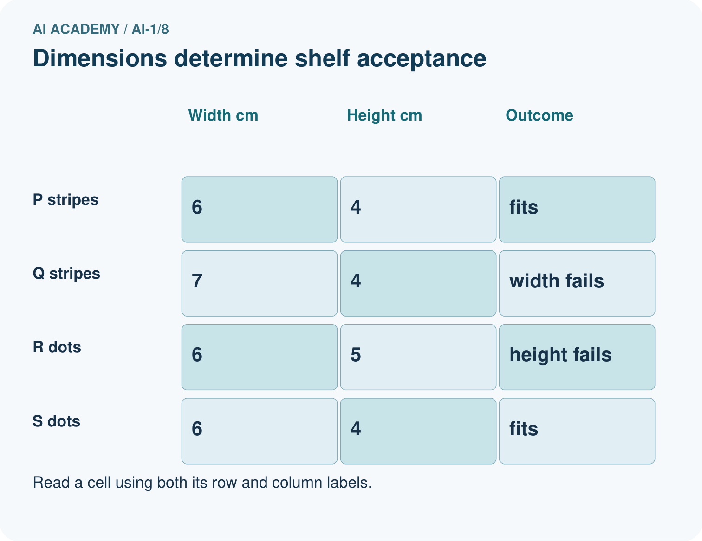
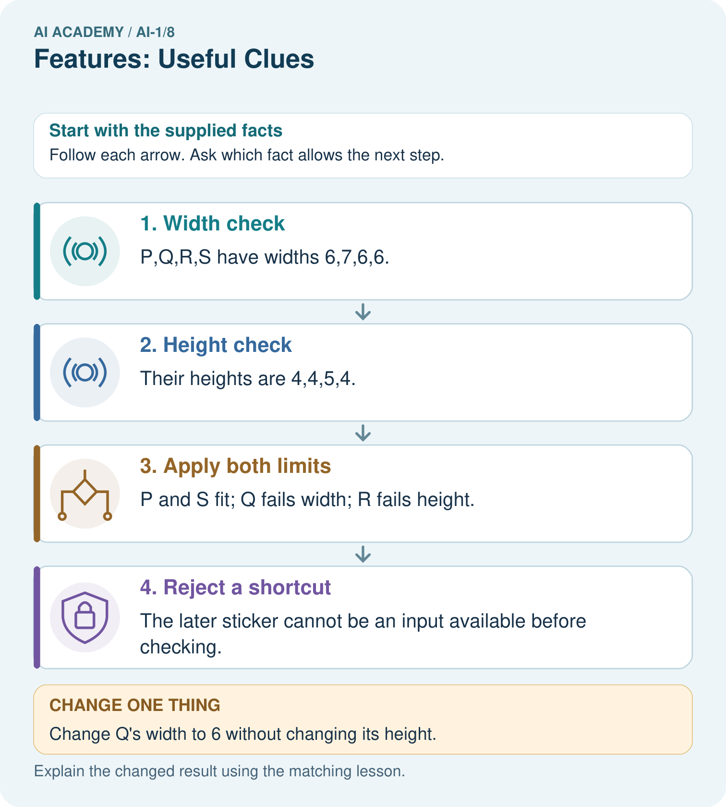
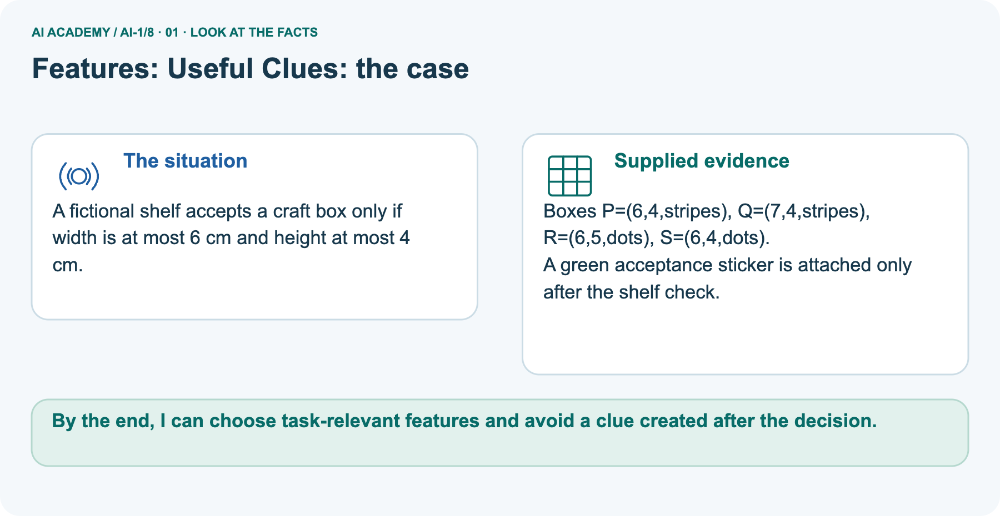
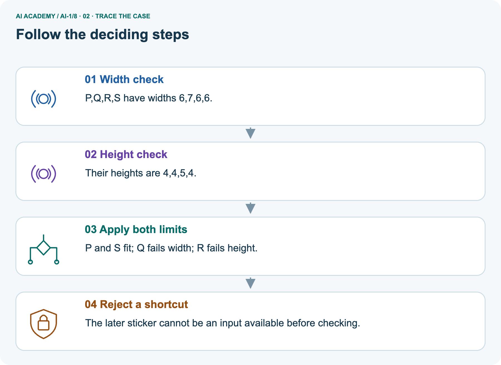
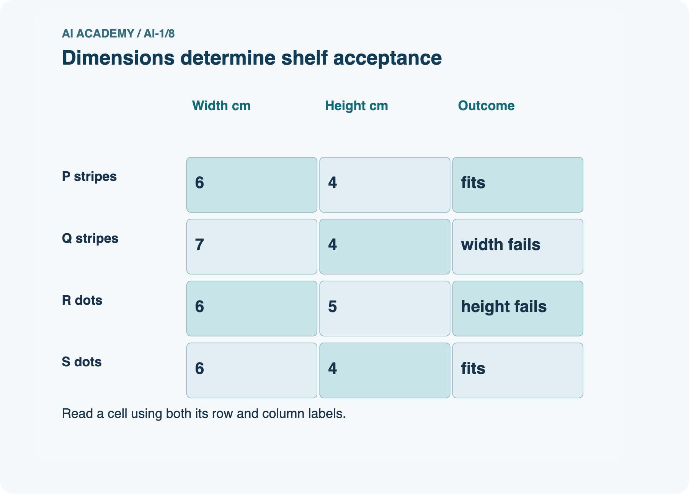
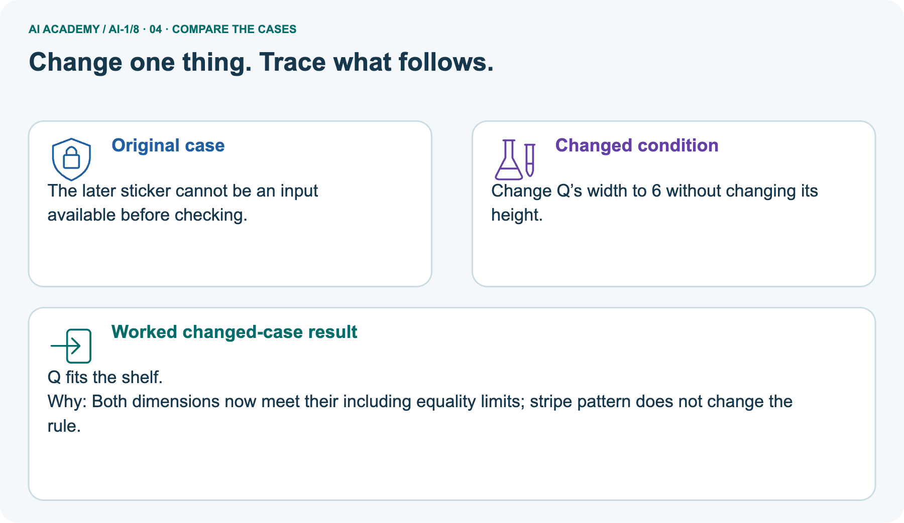
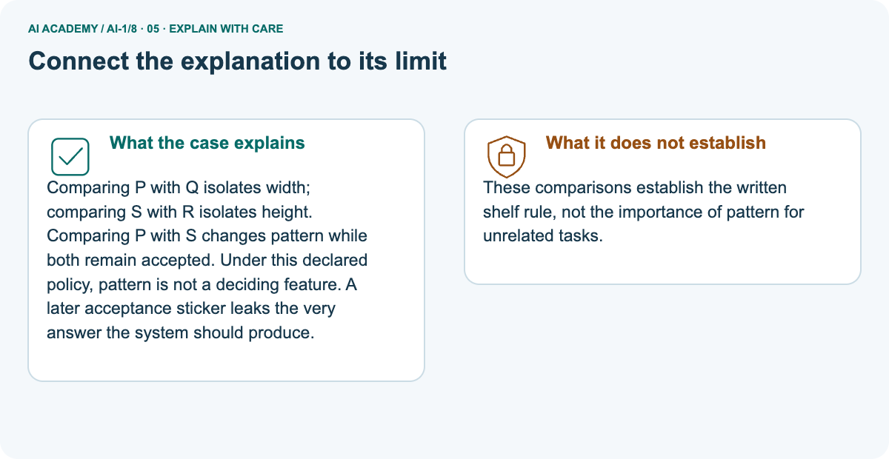
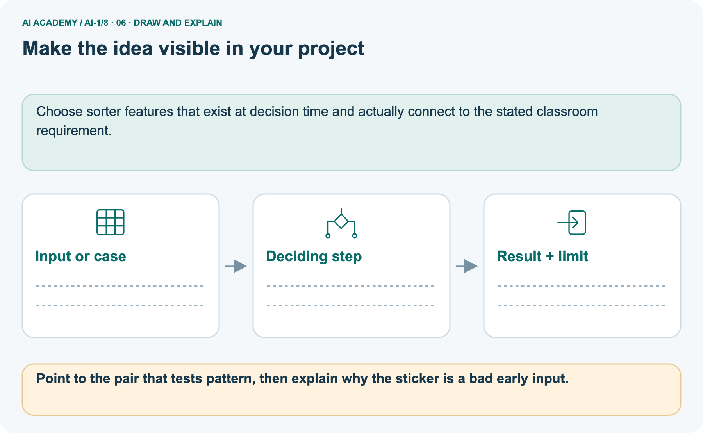

AI Academy · Level 1 · Grade 6 · Week 8 · Workbook
Features: Useful Clues
Learn to understand, design, build, test and explain AI systems responsibly.
Project: Helpful Classroom Sorter
Workbook · 1 of 21
Recall and choose your starting point
Record your starting explanation for Features: Useful Clues before opening notes. Show any later correction separately.
Try the recall before opening notes. Then use a different colour or a labelled second line to correct your explanation.
Categories and Labels
Without opening the old lesson, explain one key idea from Categories and Labels. Give an example and a mistake that the idea helps you avoid.
Pictures Become Numbers
Without opening the old lesson, explain one key idea from Pictures Become Numbers. Give an example and a mistake that the idea helps you avoid.
Input, Process, Output
Without opening the old lesson, explain one key idea from Input, Process, Output. Give an example and a mistake that the idea helps you avoid.
Workbook · 2 of 21
Practise with fading help
Complete the supported Features: Useful Clues trace and record the first step you can explain without help.
Use W2: Prove that one measurement is insufficient for Features and useful distinctions. Record the answer once; the lesson and workbook refer to the same attempt.
| Given inputs | Procedure I chose | Middle steps | Result and check |
|---|---|---|---|
Workbook · 3 of 21
Individual reasoning check
Check the proposed Features: Useful Clues explanation against the supplied facts before discussing it.
Use the worked case for Features and useful distinctions. Proposed explanation: “A stronger model can always recover an omitted measurement”. Decide whether this explanation is supported.
Point to the step or supplied fact that decides; explain your repair if needed.
Workbook · 4 of 21
Independent transfer case
Write one first attempt at the reserved independent case before feedback. Repeated copies of that case refer to the same recorded attempt.
Independent case: Design a record for a new task
A fictional display tray accepts a tile if its height is at most 9 cm and its thickness is at most 2 cm, including equality. Other dimensions are fixed. Before checking, you can record height, thickness and pattern name.
A pass sticker is added afterward. Choose inputs with units. Construct two tiles with the same height but different labels.
Then label a 9 cm high, 2 cm thick striped tile and explain why the sticker is unsuitable as an input before checking.
Attempt this case before feedback. Record any help. Earlier examples below are further practice; a case already practised with feedback cannot establish fresh transfer.
Workbook · 5 of 21
Your learning target
Connect the Features: Useful Clues target to a trace and a justified conclusion.
A dataset contains only small smooth leaves and large toothed leaves. A model separates them by size. Design two fresh examples that distinguish a size shortcut from an edge-based rule.
Workbook · 6 of 21
Solve the given case
Solve the supplied Features: Useful Clues case and show the deciding evidence.
Two green leaves have smooth and toothed edges. The task is to distinguish edge types.
Choose the relevant feature and explain why size is insufficient.
Show your trace, calculation or evidence
Workbook · 7 of 21
Check a changed case
Apply the procedure to the changed case and record why the conclusion follows.
A sorter separates round and square tiles. Both shapes come in red and blue. Choose a useful feature and a distracting feature. Test your choice on a blue circle.
My independent answer and reason
Week 8 Test and reflect
Workbook · 8 of 21
Design a revealing test
Specify a changed input, expected result and observation separately.
Create a changed input, boundary case or missing-information case. Write the expected answer or safe response before testing.
| Test record | My evidence |
|---|---|
| Changed input or condition | |
| Expected answer or fallback | |
| Observed result | |
| Why the result occurred |
Workbook · 9 of 21
Project checkpoint
Justify what Features: Useful Clues adds to Helpful Classroom Sorter and keep the evidence.
Select the smallest useful features for lost-and-found sorting and reject clues tied to a particular classroom or owner.
The project change and evidence I will keep
Workbook · 10 of 21
Self check
Judge explanation, evidence, transfer and limits separately; attach the work behind your judgement.
- I can explain the mechanism.
- I can show evidence.
- I can handle a changed case.
- I can name a limit.
Mark each as not yet, with help or independently, and attach supporting work.
Teacher review ____________________ Next step ____________________
Workbook · 11 of 21
Transfer practice from the original programme
Use this earlier case as transfer practice. A case already discussed with feedback is not fresh assessment evidence.
A dataset contains only small smooth leaves and large toothed leaves. A model separates them by size. Design two fresh examples that distinguish a size shortcut from an edge-based rule.
Record support used: none, hint or teacher explanation.
Workbook · 12 of 21
W1 Separate inputs from the target
Separate inputs from the target. Apply the supplied Features: Useful Clues facts and keep your reasoning.
For the fixed-orientation card task, fits requires length at most 12 cm and width at most 8 cm, including equality.
Choose the measurements needed as inputs from length, width, colour, card number and the final inspection sticker. State the target label and write the feature record for a 12 cm by 8 cm red card using a defined order.
Workbook · 13 of 21
W2 Prove that one measurement is insufficient
Prove that one measurement is insufficient. Apply the supplied Features: Useful Clues facts and keep your reasoning.
Invent two cards with the same width but different correct labels under the card guide. Give both lengths and widths and justify the labels. Explain why a system receiving only width cannot always label both correctly.
Workbook · 14 of 21
W3 Challenge an apparent colour shortcut
Challenge an apparent colour shortcut. Apply the supplied Features: Useful Clues facts and keep your reasoning.
A practice set contains three blue cards that fit and three red cards that are too large. A helper uses blue means fits and red means too large. Create a new card that this helper mislabels.
Explain why the perfect practice score did not establish that colour was a reliable feature for this task.
Workbook · 15 of 21
W4 Design a record for a new task
Attempt before feedback. If this repeats the selected independent case, reuse that first attempt; otherwise keep a separate record. Design a record for a new task. Apply the supplied Features: Useful Clues facts and keep your reasoning.
A fictional display tray accepts a tile if its height is at most 9 cm and its thickness is at most 2 cm, including equality. Other dimensions are fixed. Before checking, you can record height, thickness and pattern name.
A pass sticker is added afterward. Choose inputs with units. Construct two tiles with the same height but different labels.
Then label a 9 cm high, 2 cm thick striped tile and explain why the sticker is unsuitable as an input before checking.
Workbook · 16 of 21
W5 Notice when the task changes
Notice when the task changes. Apply the supplied Features: Useful Clues facts and keep your reasoning.
The delivery station now sorts cards into red and blue bins instead of checking dimensions. Which previously unneeded feature becomes useful? Explain why length and width alone may now be insufficient.
Give two cards that support your explanation.
Workbook · 17 of 21
Feedback, return check and learning record
Record the first repaired step and a different case to revisit after a delay.
| Evidence | My record |
|---|---|
| Worked alone / hint / model | |
| First step I repaired and why | |
| New case checked later; date and result | |
| What I can now explain without notes | |
| One remaining question |
Revisit this idea with your teacher after a delay. Familiarity is different from explaining and using it on a changed case.
Workbook · 18 of 21
Pictorial case practice: Features: Useful Clues
A fictional shelf accepts a craft box only if width is at most 6 cm and height at most 4 cm. Explain the labelled step before checking the changed condition.
A fictional shelf accepts a craft box only if width is at most 6 cm and height at most 4 cm.
Boxes P=(6,4,stripes), Q=(7,4,stripes), R=(6,5,dots), S=(6,4,dots).
A green acceptance sticker is attached only after the shelf check.


Point to the pair that tests pattern, then explain why the sticker is a bad early input.
Record the help used
Support used: alone / hint / worked example. This record is practice evidence.
Project connection: Choose sorter features that exist at decision time and actually connect to the stated classroom requirement.
Workbook · 19 of 21
Project portfolio milestone
Keep this week’s input, deciding step, result and limit together in the Helpful Classroom Sorter record.
Project: Helpful Classroom Sorter
Current milestone: Make a transparent first version. Keep a trace of how one input becomes an output; explain the rule or learned component.
Choose sorter features that exist at decision time and actually connect to the stated classroom requirement.
| Evidence to keep | My record |
|---|---|
| This week’s input and deciding step | |
| Prediction and actual result (or labelled paper trace) | |
| One change since the previous checkpoint and why | |
| One error or limit and the next test |
Workbook · 20 of 21
Supported practice and learning evidence
Try the supported questions before comparing with hints and feedback. Record what you repaired and the evidence you retained.
Use this supported practice once, in the browser or on paper. Keep the reserved independent assessment for a separate first attempt before teacher feedback.
A fictional shelf accepts a craft box only if width is at most 6 cm and height at most 4 cm.
Practice 1: explain the deciding evidence
Which labelled step matches this detail? The later sticker cannot be an input available before checking.
1. Apply both limits
2. Reject a shortcut
3. Height check
4. Width check
Hint · try first
Hint if needed: Read the steps in the pictorial case. Match the supplied detail to the stage that performs or records it.
Feedback · compare after trying
After your attempt, compare with the supported explanation: Reject a shortcut The later sticker cannot be an input available before checking. Comparing P with Q isolates width; comparing P with R isolates height.
Comparing P with S changes pattern while both remain accepted. Under this declared policy, pattern is not a deciding feature. A later acceptance sticker leaks the very answer the system should produce.
Practice 2: explain the deciding evidence
Changed case · predict first
Changed-case practice: Change Q’s width to 6 without changing its height. Which conclusion is supported by the supplied facts?
1. We can decide the result without examining the changed input or the procedure.
2. This one example guarantees correct results for every future input.
3. Q fits the shelf.
Hint · try first
Hint if needed: Use the changed condition and the deciding step in the pictorial trace. The answer must say what follows from those facts.
Feedback · compare after trying
After your attempt, compare with the supported explanation: Q fits the shelf. Both dimensions now meet their limits, with equality allowed; stripe pattern does not change the rule.
Repair a missing building block
Review Categories and Labels (ai-1/7). Goal: Apply a category definition using explicit evidence and boundary rules. Short practice: Explain why B originally was revise rather than review, then label its changed version..
Return to this week and explain what you changed.
Review Pictures Become Numbers (ai-1/5). Goal: Encode and reconstruct a small image using an explicit grid convention.
Short practice: Find a position where the original badges differ, then read the changed A back as a picture.. Return to this week and explain what you changed.
Review Input, Process, Output (ai-1/2). Goal: Trace information through a system without confusing information with a physical action. Short practice: Use the richer record to find blue pencils in Box B.
Explain why total alone was insufficient.. Return to this week and explain what you changed.
Keep your completed work
Use Download completed work in the hosted lesson to export your answers, reflections, practice feedback and code-run evidence. Open the HTML copy to read or print it.
Drafts stay in this browser when storage is available; clear drafts on a shared device.
Workbook · 21 of 21
Visual concept journey
Explain each Features: Useful Clues picture from its labels, then record a relevant limit.
01. Features: Useful Clues: the case

A fictional shelf accepts a craft box only if width is at most 6 cm and height at most 4 cm. Supplied facts: Boxes P=(6,4,stripes), Q=(7,4,stripes), R=(6,5,dots), S=(6,4,dots).
A green acceptance sticker is attached only after the shelf check.
Point to the given fact that matters most. Explain why it matters.
02. Follow the deciding steps

Width check: P,Q,R,S have widths 6,7,6,6. → Height check: Their heights are 4,4,5,4. → Apply both limits: P and S fit; Q fails width; R fails height. → Reject a shortcut: The later sticker cannot be an input available before checking.
Point to each numbered stage and explain which recorded input it uses.
03. Dimensions determine shelf acceptance

Dimensions determine shelf acceptance. P stripes: Width cm = 6, Height cm = 4, Outcome = fits. Q stripes: Width cm = 7, Height cm = 4, Outcome = width fails. R dots: Width cm = 6, Height cm = 5, Outcome = height fails.
S dots: Width cm = 6, Height cm = 4, Outcome = fits.
Read the labels and values. Explain the relationship the model shows.
04. Change one thing. Trace what follows.

Original case: The later sticker cannot be an input available before checking. Changed condition: Change Q’s width to 6 without changing its height. Expected result: Q fits the shelf.
Reason: Both dimensions now meet their limits, with equality allowed; stripe pattern does not change the rule.
Predict before checking the worked changed-case result. Name what changed and what the supplied facts allow you to conclude.
05. Connect the explanation to its limit

Comparing P with Q isolates width; comparing P with R isolates height. Comparing P with S changes pattern while both remain accepted. Under this declared policy, pattern is not a deciding feature.
A later acceptance sticker leaks the very answer the system should produce. Limit: These comparisons establish the written shelf rule, not the importance of pattern for unrelated tasks.
Explain the case, then point to a limit on the claim.
06. Make the idea visible in your project

Choose sorter features that exist at decision time and actually connect to the stated classroom requirement. Draw your input, deciding step, result and limit.
Supported question: Point to the pair that tests pattern, then explain why the sticker is a bad early input.
Draw your project trace and justify the deciding step using evidence.